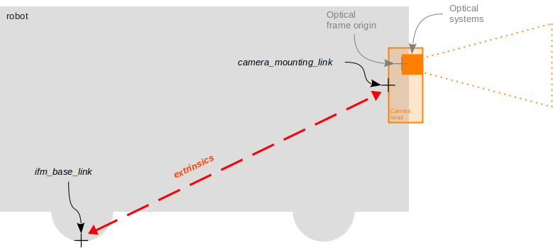

Camera Transforms and Calibration
This document explains how the O3R camera transform mechanism works, the calibration process, and how transforms are published in ROS 2.
Overview
The O3R camera system uses a multi-level transform hierarchy to accurately position sensor data in 3D space. Understanding this hierarchy is crucial for proper integration with robotic systems and point cloud processing.
Transform Hierarchy
The O3R system defines three main coordinate frames:
ifm_base_link- The reference frame after calibrationmounting_link- The physical mounting point of the cameraoptical_link- The optical center of the camera sensor

The complete transform chain is: ifm_base_link → mounting_link → optical_link
Calibration Reference Point
Important
The O3R calibration reference point, mounting_link, is located at the center back of the camera housing, not at the optical center. This is a key difference from some other camera systems.

When performing calibration:
The mounting frame reference is at the back of the O3R camera head housing
Scale drawings for exact mounting dimensions can be found on ifm.com in the download section for your specific camera model
The optical frame is automatically calculated from factory intrinsic parameters
Additional Calibration Resources
For comprehensive information about O3R calibration routines and best practices:
General calibration guide: O3R Calibration Routines
Introduction to calibrations: Calibration Concepts
Calibration Process
Where to Calibrate
Calibration should be performed in the ifm coordinate system, not in “ROS world” coordinates. There are two primary methods:
Method 1: Using ifm Vision Assistant
The ifm Vision Assistant provides a graphical interface for camera calibration:
Connect to your O3R device via Vision Assistant
Navigate to the camera configuration section
Use the built-in calibration tools to set extrinsic parameters
The calibration defines the transform from
mounting_linktoifm_base_link
For detailed instructions, refer to changing parameters using ifm Vision Assistant.
Method 2: JSON Configuration File
You can also calibrate via JSON configuration files. See the configuration documentation:
For camera nodes: Camera Parameters (see
config_fileparameter)For ODS applications: ODS Configuration
Example extrinsic calibration in JSON:
{
"ports": {
"port0": {
"processing": {
"extrinsicHeadToUser": {
"rotX": 0.0,
"rotY": 0.0,
"rotZ": 1.57,
"transX": 0.5,
"transY": 0.0,
"transZ": 1.2
}
}
}
}
}
Note
Independent Calibration Values: The rotation and translation values in the JSON configuration are applied independently, not sequentially. Each parameter contributes directly to the final transform matrix.
Published Transforms
After calibration, the ifm3d-ros2 node publishes the following transforms:
1. Base to Mounting Transform
From:
ifm_base_linkTo:
mounting_linkSource: Extrinsic calibration parameters (
extrinsicHeadToUser)Purpose: Positions the camera relative to the calibrated reference frame
2. Mounting to Optical Transform
From:
mounting_linkTo:
optical_linkSource: Factory intrinsic calibration parameters
Purpose: Provides the optical center for image and point cloud data
Both transforms can be enabled/disabled via ROS parameters. See Camera Parameters for configuration options.
Point Cloud Reference Frame
After calibration, all point cloud data is published with ifm_base_link as the reference frame. This means:
Point cloud coordinates are relative to your calibrated reference system
The calibration establishes the relationship between camera data and your robot/world coordinate system
Visualization tools like RViz will display the point cloud in the
ifm_base_linkframe
Transform Configuration Parameters
The transform publishing behavior can be controlled via ROS parameters:
Parameter |
Type |
Default |
Description |
|---|---|---|---|
|
string |
|
Name for the ifm reference frame |
|
string |
|
Name for the camera mounting frame |
|
string |
|
Name for the optical frame |
|
bool |
|
Publish base→mounting transform |
|
bool |
|
Publish mounting→optical transform |